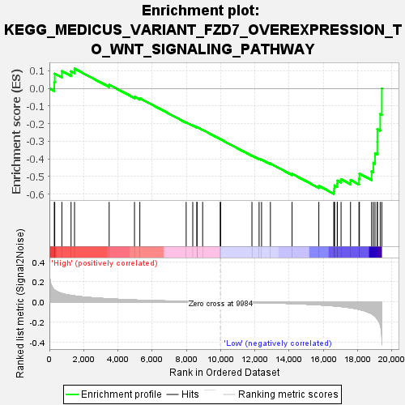
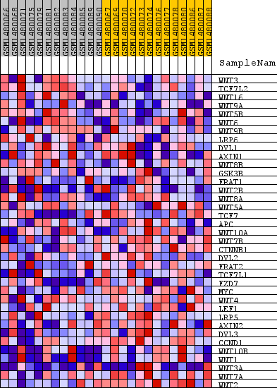
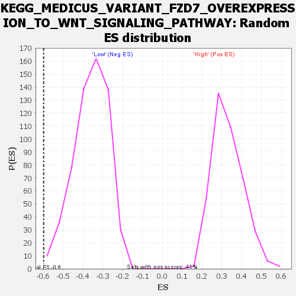

| Dataset | WG6v3.CPT1A.cls#High_versus_Low.CPT1A.cls#High_versus_Low_repos |
| Phenotype | CPT1A.cls#High_versus_Low_repos |
| Upregulated in class | Low |
| GeneSet | KEGG_MEDICUS_VARIANT_FZD7_OVEREXPRESSION_TO_WNT_SIGNALING_PATHWAY |
| Enrichment Score (ES) | -0.5980395 |
| Normalized Enrichment Score (NES) | -1.6700623 |
| Nominal p-value | 0.005059022 |
| FDR q-value | 0.09844616 |
| FWER p-Value | 0.628 |

| SYMBOL | TITLE | RANK IN GENE LIST | RANK METRIC SCORE | RUNNING ES | CORE ENRICHMENT | |
|---|---|---|---|---|---|---|
| 1 | WNT3 | WNT3 | 286 | 0.121 | 0.0361 | No |
| 2 | TCF7L2 | TCF7L2 | 312 | 0.117 | 0.0842 | No |
| 3 | WNT16 | WNT16 | 728 | 0.084 | 0.0982 | No |
| 4 | WNT9A | WNT9A | 1265 | 0.065 | 0.0979 | No |
| 5 | WNT5B | WNT5B | 1467 | 0.060 | 0.1126 | No |
| 6 | WNT6 | WNT6 | 3491 | 0.031 | 0.0213 | No |
| 7 | WNT9B | WNT9B | 4970 | 0.020 | -0.0467 | No |
| 8 | LRP6 | LRP6 | 5283 | 0.018 | -0.0554 | No |
| 9 | DVL1 | DVL1 | 7989 | 0.006 | -0.1924 | No |
| 10 | AXIN1 | AXIN1 | 8374 | 0.005 | -0.2101 | No |
| 11 | WNT8B | WNT8B | 8614 | 0.004 | -0.2207 | No |
| 12 | GSK3B | GSK3B | 8622 | 0.004 | -0.2194 | No |
| 13 | FRAT1 | FRAT1 | 8952 | 0.003 | -0.2350 | No |
| 14 | WNT2B | WNT2B | 9976 | 0.000 | -0.2878 | No |
| 15 | WNT8A | WNT8A | 10008 | -0.000 | -0.2893 | No |
| 16 | WNT5A | WNT5A | 11831 | -0.006 | -0.3809 | No |
| 17 | TCF7 | TCF7 | 12249 | -0.007 | -0.3994 | No |
| 18 | APC | APC | 12392 | -0.008 | -0.4035 | No |
| 19 | WNT10A | WNT10A | 12910 | -0.010 | -0.4261 | No |
| 20 | WNT7B | WNT7B | 14175 | -0.016 | -0.4845 | No |
| 21 | CTNNB1 | CTNNB1 | 15739 | -0.029 | -0.5530 | No |
| 22 | DVL2 | DVL2 | 16613 | -0.039 | -0.5817 | Yes |
| 23 | FRAT2 | FRAT2 | 16642 | -0.039 | -0.5666 | Yes |
| 24 | TCF7L1 | TCF7L1 | 16656 | -0.039 | -0.5507 | Yes |
| 25 | FZD7 | FZD7 | 16814 | -0.042 | -0.5410 | Yes |
| 26 | MYC | MYC | 16821 | -0.042 | -0.5236 | Yes |
| 27 | WNT4 | WNT4 | 17037 | -0.046 | -0.5154 | Yes |
| 28 | LEF1 | LEF1 | 17589 | -0.058 | -0.5196 | Yes |
| 29 | LRP5 | LRP5 | 18083 | -0.074 | -0.5138 | Yes |
| 30 | AXIN2 | AXIN2 | 18110 | -0.075 | -0.4835 | Yes |
| 31 | DVL3 | DVL3 | 18821 | -0.117 | -0.4711 | Yes |
| 32 | CCND1 | CCND1 | 18922 | -0.129 | -0.4222 | Yes |
| 33 | WNT10B | WNT10B | 19021 | -0.141 | -0.3678 | Yes |
| 34 | WNT1 | WNT1 | 19154 | -0.170 | -0.3030 | Yes |
| 35 | WNT3A | WNT3A | 19157 | -0.172 | -0.2309 | Yes |
| 36 | WNT7A | WNT7A | 19323 | -0.224 | -0.1452 | Yes |
| 37 | WNT2 | WNT2 | 19419 | -0.358 | 0.0002 | Yes |

